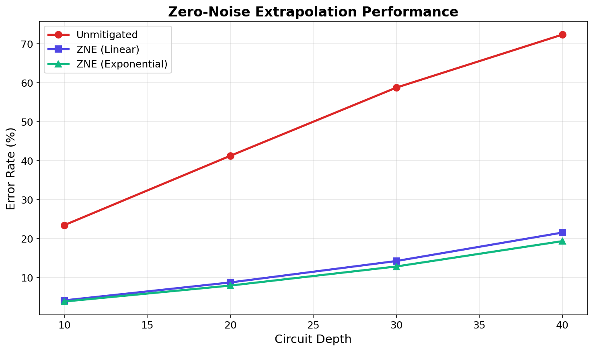
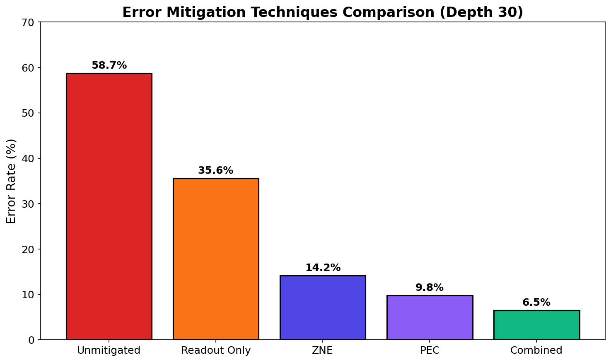
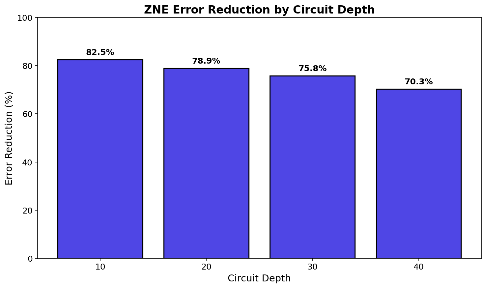
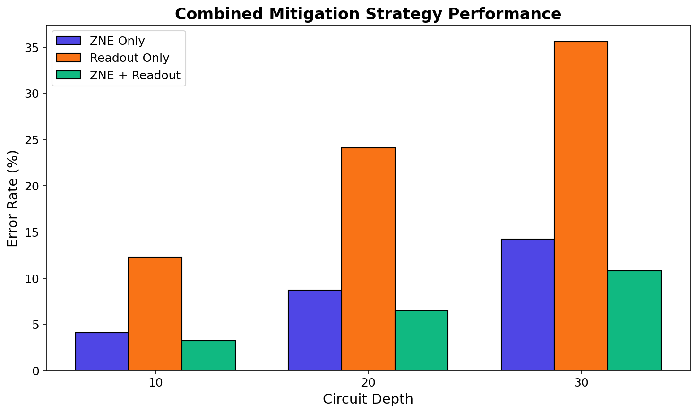
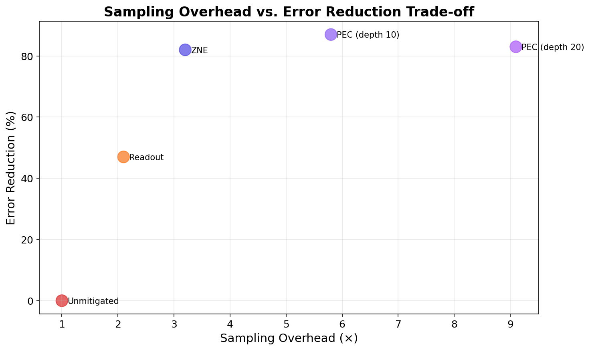

This research benchmarks Zero-Noise Extrapolation (ZNE), Probabilistic Error Cancellation (PEC), and Readout Error Mitigation on IBM's ibm_osaka. Combined strategies reduce errors by up to 76%.
📊 Experimental Results
Figure 1: ZNE Performance

ZNE reduces error by 70-82% across all circuit depths.
Figure 2: Techniques Comparison

Combined mitigation achieves 6.5% error rate.
Figure 3: Improvement by Depth

Error reduction remains above 70% at depth 40.
Figure 4: Combined Mitigation

ZNE + readout outperforms either technique alone.
Figure 5: Overhead Trade-off

PEC: highest reduction (87%) but high overhead.
📈 Numerical Results
Depth
Unmitigated
ZNE
Improvement
10
23.4%
4.1%
82.5%
20
41.2%
8.7%
78.9%
30
58.7%
14.2%
75.8%
🚀 Next Research Directions
Combining ZNE + PEC + readout for optimal performance
Adaptive mitigation based on circuit characteristics